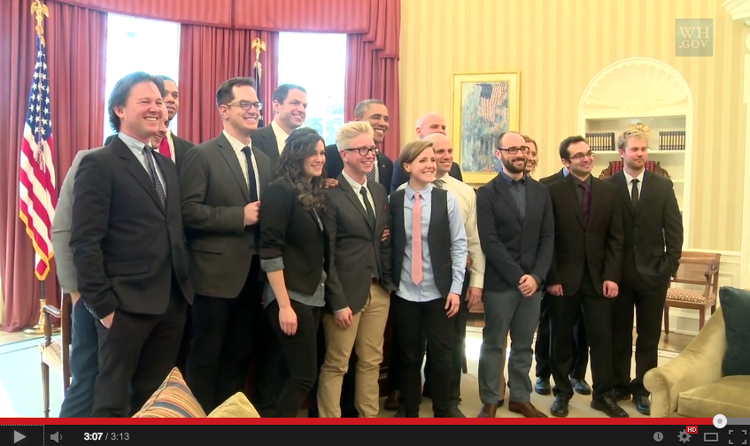

Tanto meros indivíduos como empresas de grande produção já utilizaram o You-
Tube para aumentarem as suas audiências.
Criadores de conteúdo independentes
geraram raízes de seguidores na casa dos milhões.
Concorrentemente, celebridades dos "media antigos" juntaram-se ao site a convite de uma gestão do YouTube
que testemunhou os primeiros criadores a formar redes de seguidores substanciais e
apercebeu-se que o tamanho destas audiências eram potencialmente maior do que as
obtidas pela televisão. O sistema de pagamento do YouTube ("Partner Program")
tornou possível viver tendo como profissão criar vídeos e publicá-los no YouTube
para as suas audiências assistirem. Os 500 parceiros mais bem pagos YouTube recebem mais de 100.000 de dólares anuais sendo que os top 10 recebe entre 2.5 e 12
milhões de doláres anualmente.
O trabalho destes criadores não só deve ser de alta qualidade como deve proporcionar reações tanto na plataforma do YouTube com-o nas redes socias de forma a que
o seu trabalho chegue ao maior número de pessoas.
A comunicação cara-a-cara que os vídeos online proporcionam foi "ajustada durante milhões de anos de evolução", o curador da TED, Chris Anderson, referiu
vários contributos do YouTube e afirmou que "o que o projeto Gutenberg fez pela
escrita, o vídeo online agora pode fazer pela comunicação cara-a-cara ". Anderson
afirmou que não é exagero dizer que o vídeo online acelerará drasticamente o avanço
científico e que os contribuintes de vídeo estarão prestes a lançar "o maior ciclo de
aprendizagem na história humana". Na educação, por exemplo, a Khan Academy
cresceu a partir de sessões de tutoria em vídeo do YouTube dadas pelo fundador
Salman Khan, para o seu primo no que o Michael Noer, da Forbes, apelidou de "a
maior escola do mundo", com tecnologia pronta para abalar a forma como as pessoas
aprendem. O YouTube recebeu um Prémio George Foster Peabody de 2008, o site
sendo descrito como um "Speakers 'Corner"que "incorpora e promove a democracia". Foi notícia no
The Washing Post que uma parcela desproporcional dos canais
mais subscritos do YouTube pertenciam a minorias étnicas o que contrasta com a
televisão convencional em que as estrelas são em grande parte brancas.
Por outro lado, o YouTube também permitiu que o governo se envolvesse mais
facilmente com os cidadãos. O canal oficial do YouTube da Casa Branca, sendo o
sétimo maior produtor de organizações de notícias no YouTube em 2012.

Em fevereiro de 2014, o presidente dos EUA, Obama, realizou uma reunião na Casa
Branca com os principais criadores de conteúdo do YouTube para não apenas promo-
ver a consciencialização do programa
Obamacare mas, mais geralmente, desenvolver
formas do governo se conectar melhor com a "geração do YouTube". Mesmo com
a capacidade inerente ao YouTube de permitir que os presidentes se conectassem
diretamente com os cidadãos comuns, observou-se que o conhecimento dos criadores
de conteúdo do YouTube sobre os novos media era necessário para melhor lidar com
o conteúdo distrativo e o público errático do site.